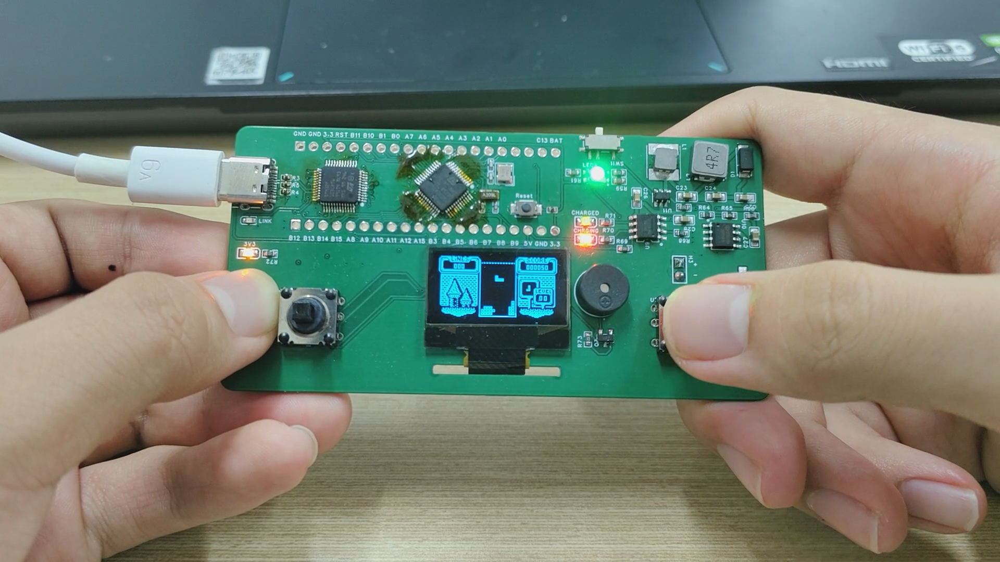

基于FreeRTOS的stm32多任务游戏机
这是我在大二暑假制作的一个支持运行FreeRTOS操作系统的游戏机，系统自带4个游戏程序，可以通过菜单进行选择，除了普通的游戏功能之外，系统还支持后台运行游戏功能。

板子上电后，选择游戏的菜单的任务函数会先被创建，从而使OLED上显示出显示选择游戏的菜单。当玩家通过按钮选择对应的游戏后，对应游戏的任务函数将会创建，同时选择游戏的菜单的任务函数会被暂停。
当玩家万其中一款游戏玩到一半想要切换其他游戏时，通过按下板载的“最小化应用”按钮，或者是“关闭应用”按钮，可以将相对应的游戏任务函数进行暂停或者删除，从而实现把游戏程序放到系统后台或关闭游戏的效果。
如果在游戏任务被暂停时玩家想继续玩这个游戏，可以通过菜单选择原本的游戏，此时程序会通过判断原本游戏任务是否存在，来决定是否恢复暂停的任务还是重新创建新任务，达到游戏从系统后台启动或重新启动的效果。
电路板参考了网上的开源项目，集成了stm32最小系统、stlink调试器、锂电池充放电电源管理电路、OLED电路等，使用钢网和回流焊工艺焊接而成，减小体积的同时增强了整体电路的可靠性。